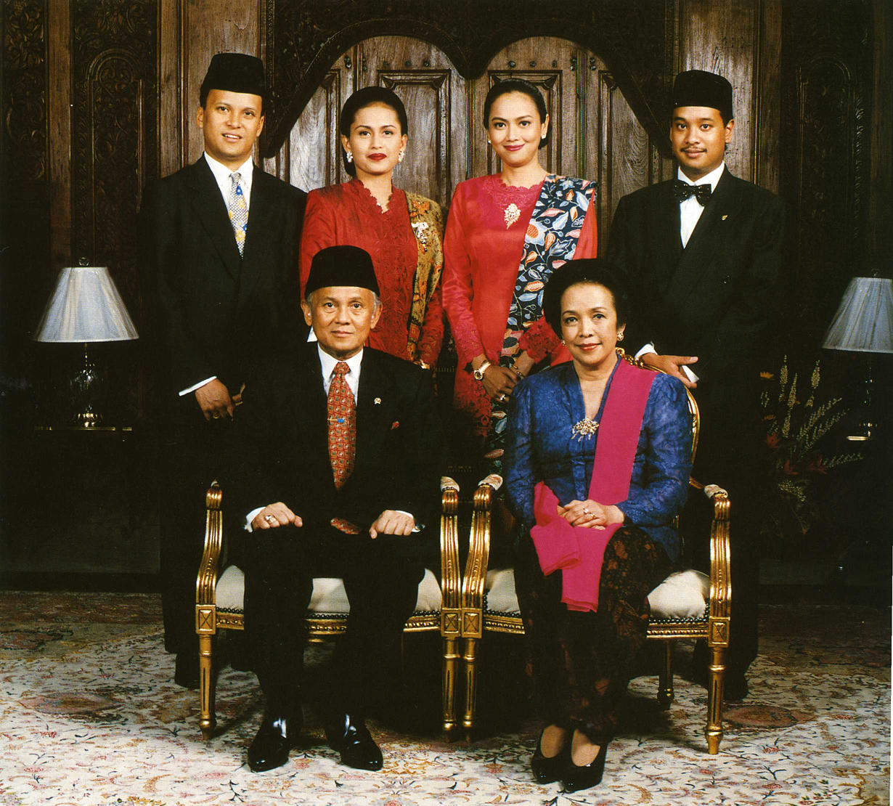
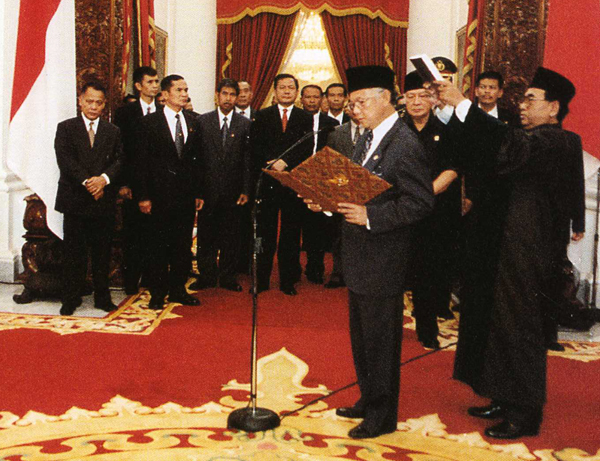
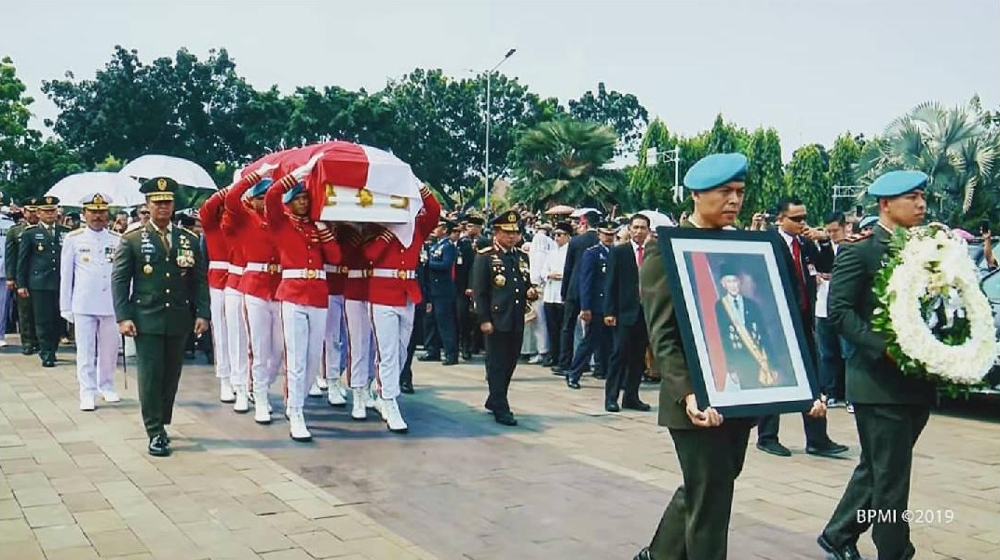

Biografi

Bacharuddin Jusuf Habibie lahir pada 25 Juni 1936 di Pare-Pare Sulawesi Selatan. B.J. Habibie adalah
anak keempat dari delapan bersaudara. Ayahnya bernama Alwi Abdul Jalil Habibie dan ibunya bernama
RA. Tuti Marini Puspowardojo. Habibie menghabiskan masa kecil di Pare-Pare. Pada tahun 1950, Habibie
harus ditinggal oleh ayahnya karena terkena serangan jantung. Tidak lama setelah itu, Habibie pindah
ke Bandung untuk belajar di Gouvernments Middlebare School.
Pada tahun 1954 Habibie lulus dari SMA dan masuk ke Universitas Indonesia di Bandung (ITB). Ia juga
mendapatkan gelar diploma dari Technische Hochschule Jerman pada tahun 1960. Habibie menikah pada
tahun 1962 dengan seorang perempuan bernama Hasri Ainun Habibie dan dikaruniai dua orang putra. Di
tempat yang sama di Jerman, lima tahun kemudian Habibie mendapatkan gelar doktor. Pada tahun 1967,
Habibie berhasil menjadi guru besar atau profesor di Institut Teknologi Bandung (ITB).
Karier

Sampai sekarang, B.J. Habibie adalah sosok idaman anak-anak muda Indonesia yang ingin berprestasi.
Karier profesional Habibie dimulai di Jerman. Ia sangat berminat dengan dunia penerbangan. Saat itu,
Habibie bekerja di perusahaan pesawat terkemuka yaitu Messerschmitt-Bölkow-Blohm (MBB).
Prestasi gemilang B.J. Habibie di luar negeri membuatnya dipanggil kembali ke Indonesia untuk
membantu presiden melakukan pembangunan. Habibie pulang ke Indonesia pada tahun 1974 dan mendirikan
Badan Pengkajian dan Penerapan Teknologi (BPPT). Pada waktu itu, B.J. Habibie bahkan berhasil
membuat sebuah pesawat terbang milik anak bangsa bernama N-250 Gatotkaca. Tidak lama setelah
kepulangannya ke Indonesia, karier Habibie mulai menanjak naik.
Habibie diberikan jabatan oleh Soeharto sebagai Menteri Negara Riset dan Teknologi pada tahun 1978.
Jabatan itu ia emban selama 20 tahun sampai tahun 1998 sebelum akhirnya B.J. Habibie diangkat
menjadi Wakil Presiden. Di tengah pergolakan politik pada tahun 1998, Soeharto akhirnya mengundurkan
diri
sebagai Presiden. Habibie sebagai wakilnya kemudian menggantikan Soeharto. Ia naik menjadi Presiden
RI pada 21 Mei 1998 dan mengakhiri jabatannya pada 20 Oktober 1999.
Akhir Hayat Alm.BJ.Habibie

B.J. Habibie adalah sosok inspiratif yang akan selalu tercatat dalam sejarah bangsa Indonesia.
Setelah ia tak menjabat sebagai presiden, Habibie sempat tinggal di Jerman dan kemudian kembali lagi
ke tanah air. Ia menghabiskan masa hidupnya untuk perkembangan teknologi dan demokratisasi
Indonesia.
Habibie harus menghembuskan nafas terakhirnya pada 11 September 2019 di RSPAD Gatot Subroto pukul
18.05 WIB. Habibie meninggal dunia karena mengalami gagal jantung dan sudah dirawat sejak 1
September 2019. B.J. Habibie dimakamkan di samping makam istrinya, Hasri Ainun Besari di Taman Makam
Pahlawan Kalibata pada 12 September 2019.